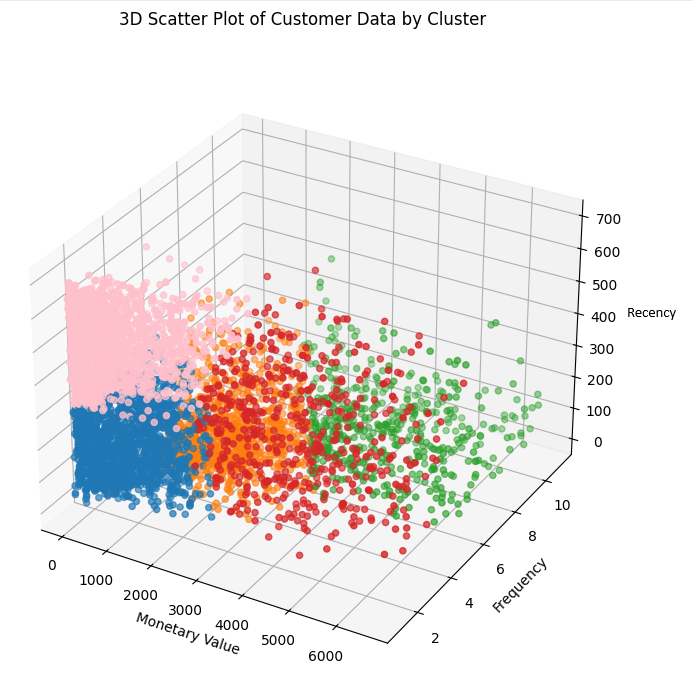

In a pioneering project at my current job, I leveraged advanced analytics techniques, including RFM analysis and KMeans
clustering, to enhance revenue from existing patients. Through meticulous analysis of sales data, I identified
distinct behavioral patterns, segmenting the patient base into actionable clusters. Each segment was analyzed using
violin graphs to illustrate the distribution of key features—Recency, Frequency, and Monetary Value. Strategic insights
derived from this segmentation facilitated tailored marketing strategies and personalized patient engagement plans. The
implementation of these findings into our CRM system has revolutionized how we interact with patients, significantly
boosting patient satisfaction and loyalty, thereby driving increased revenue. This project exemplifies my commitment to
transforming data into tangible business outcomes.


I developed a Python feature to consolidate similar job titles into broader categories, making it
easier to analyze job title trends and patterns while ensuring consistency in reporting. I then performed
SQL analysis on the resulting dataset, creating views to count occurrences of each title and assess
the effectiveness of the transformations. The analysis allowed me to gain deeper insights into the impact of the
feature and identify areas for further improvements.
I used Tableau to visualize the results of the SQL analysis, creating charts and graphs to identify
trends and communicate the insights gained from the data. This allowed me to present the findings in a more engaging
and intuitive way to stakeholders.

I developed a feature for my job that addressed the issue of inconsistent and varied spellings for states and countries in our contact database. To streamline data input, I cleaned up the database and presented the results in Tableau, highlighting the significance of the feature and the extent of its impact.
Feature Dev using Python in Sagemaker and Redshift(AWS tools), Visualization using Tableau.

In this project I explored a dataset that has CO2 Emissions by country for the years 1750 - 2022.
Using Python.

Showing insights of worldwide trends and events using data about CO2 Emissions from cement production.

Exploring data of weather in Fort Collins, CO and on top of mountain Longs Peak in Colorado. Looking at temperture, wind patterns, yearly precipitation and seasonly precipitation.
Using SQL.

This is a weather analysis of weather trends in Fort Collins,CO. The data is collected directly from NASA API. Includes a ML model for rain prediction.

Exploring data of arrests made in Chicago, Using Python